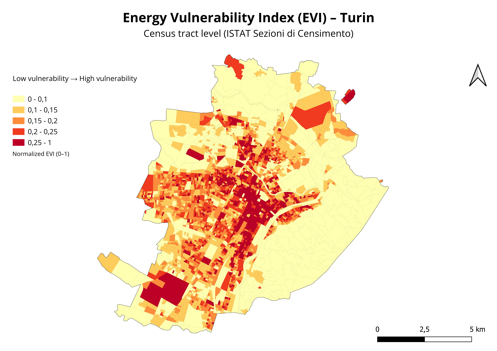

Energy Vulnerability Index — Turin
Identify which census tracts in Turin concentrate the highest energy vulnerability, combining socioeconomic, housing and demographic indicators to support targeted policy intervention.
Construction of a composite Energy Vulnerability Index (EVI) using normalized indicators from ISTAT census data at the finest available spatial resolution. Spatial autocorrelation analysis with Getis-Ord Gi* hotspot detection and Local Indicators of Spatial Association (LISA) to identify statistically significant vulnerability clusters.
High-resolution vulnerability maps and cluster analysis revealing spatial patterns invisible in aggregate statistics — enabling decision-makers to prioritize intervention areas with precision.

Urban Service Accessibility Index — Barcelona
Measure the real accessibility of urban services across Barcelona's census sections to identify underserved areas and support urban planning decisions.
Construction of a composite Urban Service Accessibility Index integrating OpenStreetMap data and Barcelona's open data portal at census section level. Multi-criteria spatial analysis combining proximity, density and coverage of key urban services.
Accessibility classification map identifying high, medium-high, medium-low and low accessibility zones — providing a spatial evidence base for equitable urban service planning.